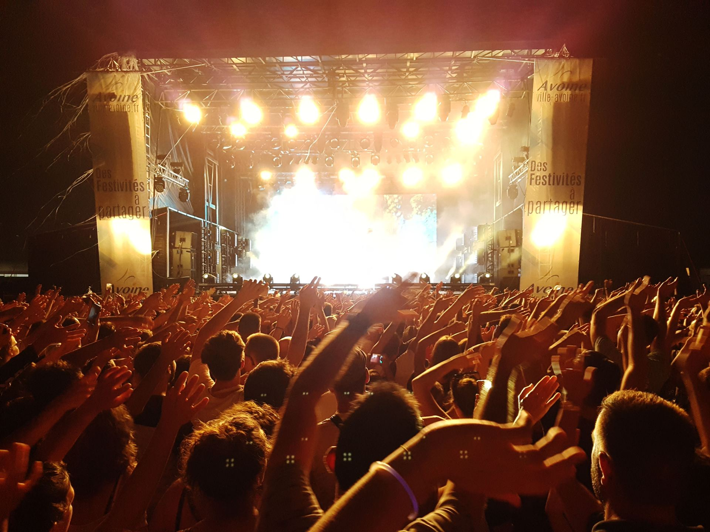

À la une
Les temps forts de la semaine

Quatre questions, et on vous trouve la sortie qui vous ressemble.
Étape 1 sur 4
Un seul choix possible.
Plusieurs choix possibles.
Distance maximale depuis .
On cherche vos sorties…
Aucune sortie pour ces critères.
Élargissez le rayon ou changez de date.
Les temps forts de la semaine